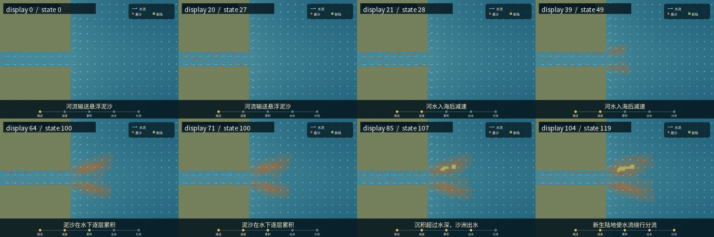

状态：PASSED
先在 96×64 网格上计算输沙、减速、沉积、出水和分流，再把状态渲染成动画。 机制状态是事实来源，渲染器不能修改机制。
配置 → 120 个机制状态 → 自动验证 → 105 个展示帧 → MP4 / GIF

| 阶段 | 含义 | 状态 | 动态帧 | 停留帧 |
|---|---|---|---|---|
transport | 河流输送悬浮泥沙 | 0–27 | 14 | 7 |
decelerate | 河水入海后减速 | 28–49 | 12 | 7 |
accumulate | 泥沙在水下逐层累积 | 50–100 | 25 | 7 |
threshold_change | 沉积超过水深，沙洲出水 | 101–107 | 7 | 7 |
reroute | 新生陆地使水流绕行分流 | 108–119 | 12 | 7 |
| 检查 | 含义 | 结果 | 证据 |
|---|---|---|---|
state_count | 状态数量与配置一致，避免少算或多算帧。 | PASS | {"actual": 120, "expected": 120} |
thickness_monotonic | 每个网格的沉积厚度只能增加，不能凭空消失。 | PASS | "all cells non-decreasing" |
new_land_monotonic | 已经出水的陆地必须持续存在。 | PASS | "all emerged cells persist" |
land_threshold_exact | 只有“沉积厚度大于当地水深”才能产生新陆地。 | PASS | "land == original_land OR (thickness > depth)" |
arrival_before_settling | 泥沙必须先到达河口，之后才能发生沉降。 | PASS | {"first_arrival": 28, "first_settling": 32} |
visible_underwater_stage | 出水前必须有足够长的水下沉积阶段。 | PASS | {"first_underwater_deposit": 32, "first_emergence": 101, "lead_frames": 69} |
emergence_in_threshold_stage | 首次出水必须发生在教学时间线的出水阶段。 | PASS | {"first_emergence": 101, "required_range": [101, 107]} |
mouth_deceleration | 河口平均流速必须明显低于上游。 | PASS | {"upstream_mean_speed": 1.34, "mouth_mean_speed": 0.45545, "ratio": 0.33989} |
final_channel_count | 最终必须形成 2–3 条可辨认通道。 | PASS | 2 |
stable_channels | 分流结果必须稳定至少配置要求的帧数。 | PASS | {"tail_frames": 19, "required": 5} |
new_land_connected | 新生陆地必须是一个连通体，不是零散噪点。 | PASS | {"components": 1, "cells": 15} |
land_and_deposit_extent | 陆地与水下沉积必须向海侧推进到最低距离。 | PASS | {"land_front_x": 52, "deposit_front_x": 63} |
state_traceability | 每个状态都必须带帧号、阶段、流场采样和统计量。 | PASS | "frame, beat, flow samples and stats present in every state" |
python -m venv .venv .venv/bin/python -m pip install -r modules/video_model/stage1/requirements.txt .venv/bin/python -m modules.video_model.stage1.causal_delta.simulate .venv/bin/python -m modules.video_model.stage1.causal_delta.validate .venv/bin/python -m modules.video_model.stage1.causal_delta.export .venv/bin/python -m pytest -q modules/video_model/stage1/causal_delta/tests
算法、公式、输入文件、输出目录、字体设置和可复现性边界请查看同目录的 完整 Markdown 报告。